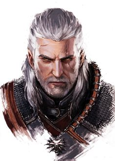
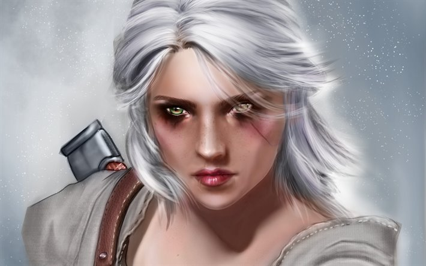
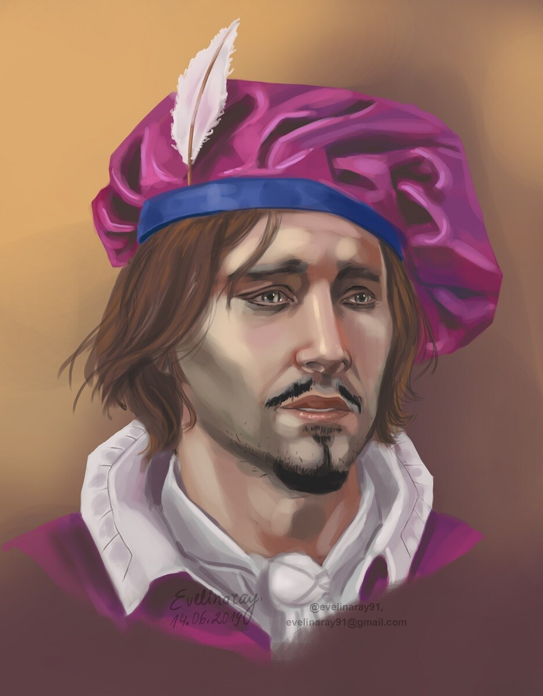

sabedoria é uma virtude que devemos tentar cultivar ao longo de toda a vida Uma pessoa nunca tem tanta sabedoria ao ponto que seja impossível ela ficar ainda mais sábia. Os sábios sabem disso... Conforme encaramos a nossa jornada, devemos tentar fazer escolhas sábias. E lembre-se: as escolhas sábias não são aquelas que deixam a nossa vida mais fácil ou simples. É bem comum que elas deixam a vida ainda mais complicada Mas elas sempre nos transformam em pessoas melhores.
Geralt Ciri Dandelion